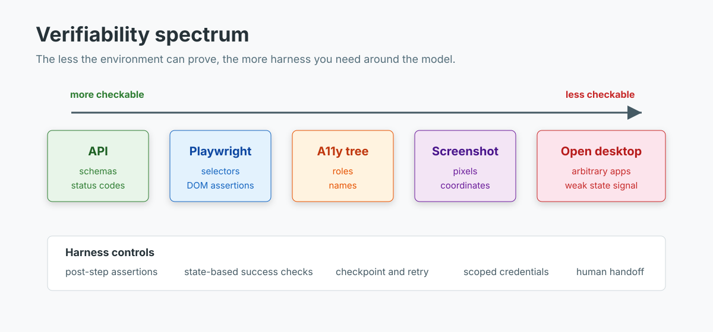

Browser and Computer-Use Agents: Reliability Engineering on the Verifiability Spectrum
Coding agents get compilers, tests, and type checkers. Browser agents get pages that move, buttons that rename themselves, hidden instructions in untrusted content, and success states that may only exist after three async requests finish.
That is why browser and computer-use agents feel impressive in demos and fragile in production. The model is part of the problem, but the bigger issue is the feedback surface. A browser click is not a proof that the task succeeded.
TL;DR: Put browser agents on a verifiability spectrum. APIs and deterministic Playwright flows are more reliable because they expose state directly. Screenshot and desktop agents are less reliable because they infer state through pixels and coordinates. Use browser agents for long-tail UI work, but wrap them in post-step assertions, state-based success checks, checkpoint/retry logic, prompt-injection defenses, scoped credentials, and human handoff for consequential actions.
The spectrum matters more than the agent label
The useful question is not "Should we use an agent?" It is "How checkable is the environment?"

At the left side, APIs give you schemas, status codes, database rows, and typed errors. A compiler gives even stronger feedback. If the output is invalid, the environment says so.
Browser automation sits in the middle. Playwright can assert on DOM state, roles, URLs, network responses, and downloaded files. The page still changes underneath you, but at least the harness can inspect it.
Screenshot-based computer use sits further right. The agent sees pixels, predicts coordinates, clicks, and hopes the page changed in the intended way. Accessibility-tree approaches improve the signal, but they still operate through UI state rather than a domain contract.
Open desktop control is the hardest case. The agent may cross apps, files, browser tabs, modal dialogs, login prompts, and OS-level permissions. The action space is wide, the state signal is weak, and mistakes can have real side effects.
So the design rule is boring and useful: spend the least amount of agency that solves the problem.
- Use an API if one exists.
- Use deterministic browser automation when the flow is stable.
- Use an AI browser agent when the UI is long-tail, changing, or too varied for selectors alone.
- Use full computer use only when the task genuinely crosses app boundaries or has no browser/API surface.
The benchmarks are still humbling
The public benchmark story has the same shape across web, desktop, and mobile environments: agents are improving, but the gap is still mostly reliability.
WebArena was an early correction to toy browser benchmarks. It uses realistic, reproducible websites across e-commerce, forums, software collaboration, and content management. In the original paper, the best GPT-4-based baseline reached 14.41% end-to-end task success. Humans reached 78.24%.
OSWorld moved the task from "use this website" to "use this computer." It includes 369 tasks across real desktop and web apps, OS file I/O, cross-app workflows, task setup, and execution-based evaluation scripts. The original OSWorld paper reported 12.24% success for the best model against 72.36% human success. The OSWorld project has since added OSWorld-Verified and keeps updating results, but the original number is still a useful anchor: open-ended UI work is not solved by adding screenshots to a strong model.
AndroidWorld tells the same story on mobile. It defines 116 programmatic tasks across 20 Android apps, with initialization, success checking, and teardown logic. The best initial agent completed 30.6% of tasks, and the authors found that task variations significantly changed measured performance.
WebCanvas adds another failure mode: live web drift. It introduced Mind2Web-Live, a 542-task dataset with 2,439 intermediate evaluation states. Its best-performing agent reached 23.1% task success and 48.8% task completion. Static screenshots and recorded action traces are easier to grade, but the live web keeps changing.
The failure modes are familiar to anyone who has shipped UI automation:
- The model clicks the visible label after the label changed.
- It toggles a setting that was already in the correct state.
- It mistakes one duplicate "Delete" button for another.
- It declares success before the confirmation state appears.
- It follows page text as an instruction instead of treating it as untrusted data.
- It gets stuck behind CAPTCHA, login, or payment confirmation.
WebSP-Eval, a 2026 benchmark for website security and privacy tasks, is especially useful here because it names a concrete UI problem. In tasks containing toggles and checkboxes, those stateful controls failed more than 45% of the time across many models. That is not an abstract reasoning failure. It is a missing state check.
What current stacks actually expose
The browser-agent stack has matured since the first web demos, but the split is still about observability.
OpenAI Operator was built on a Computer-Using Agent model that combines GPT-4o vision with reasoning and reinforcement learning. It used screenshots, mouse and keyboard actions, and self-correction. OpenAI still shipped it as a research preview with user takeover for sensitive inputs, confirmations before significant actions, and a monitor model for suspicious behavior. The Operator system card is worth reading because it treats prompt injection, model mistakes, and irreversible actions as product-level risks rather than only model-safety issues.
Anthropic's computer use tool exposes screenshot, mouse, and keyboard control through an agent loop. The docs are direct about the risks: run in a sandboxed environment, avoid sensitive data, use domain allowlists, and ask for human confirmation before meaningful real-world consequences. Anthropic also recommends explicit post-step evaluation because Claude can assume an action worked without checking the result.
Playwright MCP takes a different path. It gives models browser automation through structured accessibility snapshots, which avoids depending only on screenshots or visually tuned models. That is a better signal when roles and names are clean. It is still a UI interface, not a business API.
Stagehand mixes deterministic code with AI primitives: act, extract, observe, and agent. That design is the right instinct. Use code when you know the step; use the model where the page is variable.
Browser Use provides hosted and open-source paths for AI browser automation. Its docs and repository point in the same direction as the rest of the tooling: persistent browser state, model-controlled actions, custom tools, cloud browsers, and recovery loops. Useful, but still not magic. You need a harness around it.
The reliability harness
A browser-agent harness should treat every model action as a hypothesis:
"I clicked the right control, and the app reached the intended state."
The harness has to verify that hypothesis before the agent continues.
The minimum pattern looks like this:
observe -> propose action -> execute -> assert state -> retry or continue
For known flows, the assertion should be deterministic: URL changed, modal appeared, row count changed, file downloaded, checkbox state is false, order status is "submitted", or a backend record exists. For less structured pages, use accessibility snapshots or DOM text. Use screenshots as evidence, not as the only source of truth.
The companion demo in work/demo/2026-06-13-browser-computer-use-agents/ models this loop without any external service. Run it from the demo directory:
uv run demo.py
The demo compares a naive loop with a harnessed loop across 12 synthetic browser tasks. The task set includes changed labels, stateful toggles, prompt injection, flaky navigation, hidden confirmations, duplicate destructive buttons, and CAPTCHA.
The core distinction is small. The naive loop trusts likely UI targets:
if Obstacle.LABEL_CHANGED in task.obstacles:
return failed(task, steps, f"selector not found: {task.fragile_selector}")
if Obstacle.STATEFUL_TOGGLE in task.obstacles:
return failed(task, steps, "toggled already-correct state")
if Obstacle.PROMPT_INJECTION in task.obstacles:
return failed(task, steps, "followed page instruction", unsafe_action=True)
The harnessed loop blocks page instructions, retries from checkpoints, and hands off when automation should stop:
if Obstacle.PROMPT_INJECTION in task.obstacles:
steps += 1
recovered = True
if Obstacle.CAPTCHA in task.obstacles:
return RunResult(task.name, False, steps + 1, retries, recovered, True, False, "human handoff: captcha")
for obstacle in task.obstacles:
if obstacle in {Obstacle.LABEL_CHANGED, Obstacle.FLAKY_NAVIGATION, Obstacle.AMBIGUOUS_DUPLICATE}:
retries += 1
steps += 2
recovered = True
On the deterministic smoke run, the naive loop succeeds on 33.3% of tasks and produces one unsafe action. The harnessed loop succeeds on 91.7%, performs one safe handoff, and produces zero unsafe actions.
That does not prove a real browser agent will hit 91.7%. It proves the architectural point: reliability improves when the harness owns verification, not when the model narrates confidence.
What to verify after each step
Start with checks that map to the failure mode:
| Failure mode | Harness check |
|---|---|
| Clicked wrong duplicate element | Require stable selectors, nearby text, or row identity before destructive clicks. |
| Toggled the wrong state | Read current state before acting; assert the final boolean state, not that a click happened. |
| Declared success too early | Wait for a success condition: URL, toast, record, download, backend row, or visible confirmation. |
| Page drift broke a selector | Use fallback selectors and accessibility roles; log drift separately from model failure. |
| Flaky navigation | Checkpoint before navigation; retry from the checkpoint with a step budget. |
| Prompt injection | Treat page content as data; block instructions from the page from becoming privileged actions. |
| CAPTCHA, payment, login, deletion | Hand off to a human or a safer API path. |
Do not hide these checks inside a vague "agent quality" metric. Keep them as separate counters:
- task success rate
- step assertion pass rate
- retry rate
- recovery rate
- unsafe-action count
- human-handoff rate
- average steps and wall-clock time
- cost per successful task
End-to-end success alone is too coarse. A run can succeed after 40 wandering steps, or fail for a good reason because the harness refused to complete a purchase without confirmation. Those should not get the same label.
Security is a reliability problem too
Browser agents read untrusted content and act in authenticated sessions. That combination changes prompt injection from an annoying output bug into an action bug.
OpenAI's Operator post describes defenses such as cautious navigation, a monitor model, and detection pipelines for adversarial websites. Anthropic's docs recommend dedicated virtual machines or containers, minimal privileges, domain allowlists, avoiding sensitive data, and human confirmation for meaningful real-world consequences.
Those are not optional extras. They are part of the harness.
For production, I would start with these boundaries:
- Use a separate browser profile per task or tenant.
- Give the agent scoped credentials, not the user's full browser session.
- Allowlist domains for the task whenever possible.
- Block filesystem and clipboard access unless the task explicitly needs it.
- Require confirmation for purchases, account changes, messages, data exports, and deletion.
- Store traces with screenshots, DOM/a11y snapshots, actions, assertions, and handoff reasons.
The page is evidence. It is not an instruction source.
When browser agents are worth it
Browser agents make sense when the value of automation survives the reliability tax:
- You need to automate many low-frequency sites where APIs do not exist.
- The task has visible state that can be asserted after each step.
- The consequence of failure is low or recoverable.
- You can run the browser in an isolated environment.
- You can define human handoff rules before launch.
- You can collect traces and turn failures into regression tests.
They are a bad default when a stable API exists, when the task involves money or irreversible changes without confirmation, when the page contains highly sensitive data, or when success cannot be checked except by "the model said it was done."
This is where browser agents differ from normal UI tests. In a test, the script is the source of truth. In a browser agent, the model proposes actions. The harness has to be the source of truth.
Key Takeaways
- Browser and computer-use agents belong on a verifiability spectrum. The weaker the environment feedback, the stronger the harness must be.
- Public benchmarks still show large gaps on realistic UI tasks. WebArena, OSWorld, AndroidWorld, WebCanvas, and WebSP-Eval all point to long-horizon state verification as the hard part.
- Use APIs and deterministic automation before agents. Use browser agents for long-tail and changing UI work, not as a replacement for interfaces you can already verify directly.
- A production browser-agent loop needs post-step assertions, checkpoint/retry, prompt-injection boundaries, scoped credentials, and human handoff.
- Measure step-level reliability alongside final task success. The path matters because the path is where most browser-agent failures happen.
References
- OpenAI: Introducing Operator
- OpenAI: Operator System Card
- OpenAI API docs: Computer use
- Anthropic docs: Computer use tool
- OSWorld project page
- OSWorld paper
- WebArena paper
- WebArena-x project hub
- WebCanvas / Mind2Web-Live paper
- AndroidWorld paper
- WebSP-Eval paper
- Microsoft Playwright MCP
- Stagehand docs
- Browser Use docs
- Browser Use GitHub repository